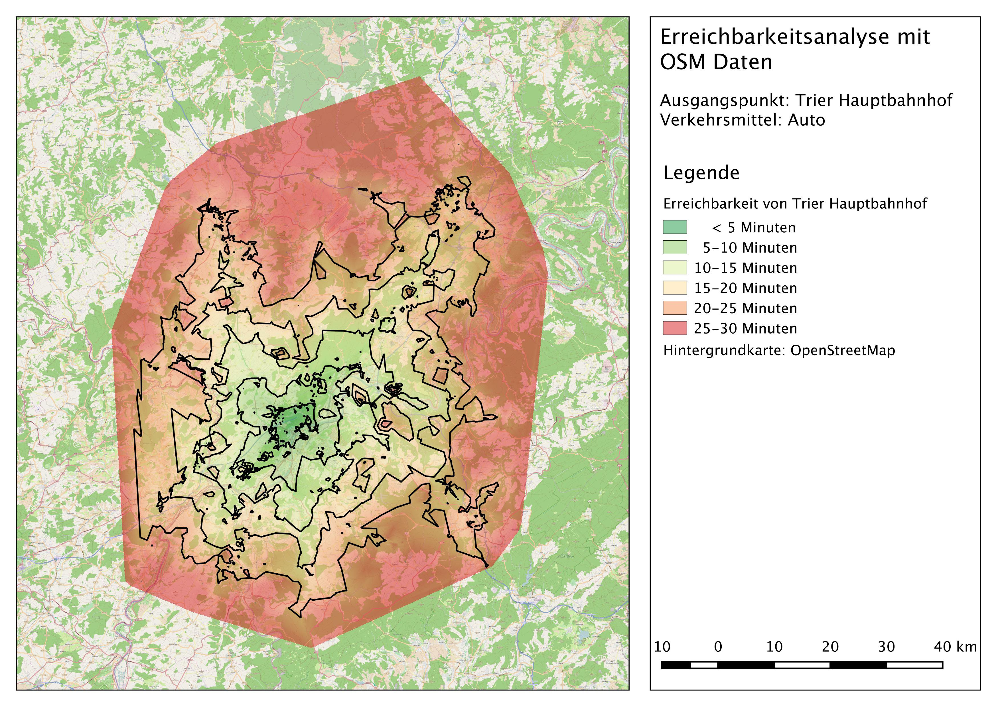
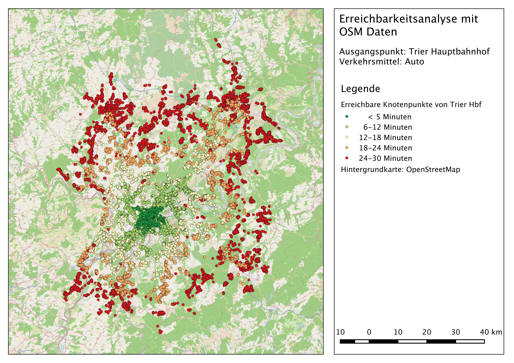

Erreichbarkeitsanalyse mittels OSM Daten
Eine weitere Anwendung von routingfähigen OSM Daten ist die Durchführung einer Erreichbarkeitsanalyse. In diesem Beispiel wurde in QGIS ermittelt, welche Gebiete innerhalb von 30 Minuten mit dem Auto vom Hauptbahnhof in Trier erreichbar sind (Abb.10).

Abb.10: Erreichbarkeitsanalyse von Trier Hauptbahnhof aus mittels OSM Daten
Dokumentation
Zunächst muss in PgAdmin3 ein SQL-Abfrage ausgeführt werden, welche alle Knotenpunkten extrahiert und diese in einer neuen Sicht abspeichert.
create or replace view public.rlp_nodes as
select id, st_centroid(st_collect(pt)) as geom
from ((select source as id, st_startpoint(geom_way) as pt
from public.rlp_2po_4pgr
)
union
(select target as id, st_endpoint(geom_way) as pt
from public.rlp_2po_4pgr
)
) as foo
group by id;
Mit einer weiteren SQL-Abfrage wird die Reisezeit in m/min berechnet. Dieser Vorgang kann einige Zeit in Anspruch nehmen, mit einem langsamen GIS-Stick sogar noch mehr. Anschließend werden die Verkehrswege und Knotenpunkte als PostGIS-Layer in QGIS importiert. Als letzten Schritt wird im DB-Manager eine SQL-Abfrage ausgeführt, welche alle Punkte ausgibt, welche innerhalb von 30 Minuten vom Anfangspunkt aus erreichbar sind (Abb.11).
SELECT *
FROM rlp_nodes
JOIN
(SELECT * FROM pgr_drivingDistance('
SELECT id,
source,
target,
traveltime AS cost
FROM public.rlp_2po_4pgr',
29616,
30,
false,
false)) AS route
ON
rlp_nodes.id = route.id1;

Abb.11: Erreichbare Punkte von Trier Hauptbahnhof aus innerhalb von 30 Minuten
Die generierten Punkte können mit Hilfe des Interpolations-Plugins von QGIS in eine flächendeckende Darstellung der erreichbaren Gebiete umgewandelt werden. Dabei ist darauf zu achten als Methode das TIN-Verfahren, als Attribut cost und als Zellgröße 20 zu wählen. Zusätzlich lassen sich mit diesem Plugin auch Konturlinien erstellen, welche die erreichbaren Gebiete in einen 5 Minuten-Intervall aufteilen.
Bei der Erstellung der Karte kam es zu Problemen beim Export, da die Hintergrundkarte von OSM in manchen Fällen nur teilweise oder gar nicht im exportierten Bild angezeigt wurde. Eine wiederholte Ausführung des Exportes führte letztendlich zum Erfolg, jedoch konnten die Beschriftungselemente der OSM Karte nicht exportiert werden.
Quellen
Teucher, M. (2015): Vorlesung Geovisualisierung WS 2014/2015. Universität Trier.